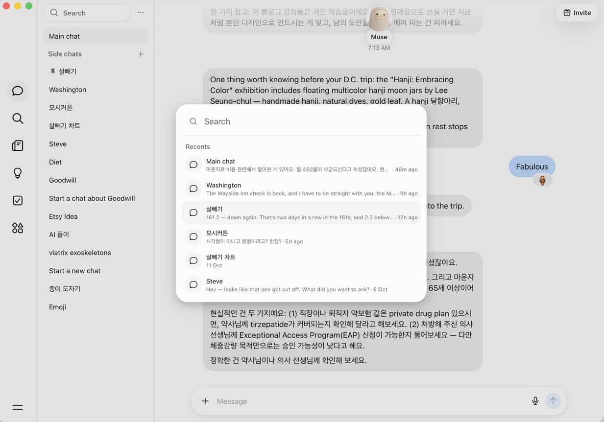

Chat search
How searching your chats should look and work, copied from Muse's desktop app. Not built yet
Today the Search box in the sidebar only filters side chats by name, and the Search icon in the left bar is greyed out. When we build search, both open the window described here.
Reference

Muse desktop, light mode, 20 October 2026.
What it looks like
| Part | Design (measured from the screenshot) |
|---|---|
| Backdrop | The whole app dims: black at 10% over everything (page turns #E2E2E2). |
| Window | Centred horizontally, about 213px from the top, 513px wide, height fits its content. Background #FCFCFC, corners about 24px, large soft shadow. |
| Search field | Magnifier icon then "Search" placeholder, 18px text, no box of its own. A 1px line (#E2E2E2) under it, inset from the window edges. |
| Section label | "Recents", 14px, grey (#686A6D), above the list. |
| Each row | A 36px round grey circle (#F3F4F5) with a chat-bubble icon; then the chat's name (15px, near-black); under it, a preview of the latest message, one line, cut off with "…", then " · " and when it was last active, in grey 13px. The hovered or selected row gets a #F3F4F5 rounded background. |
| Times | Relative when recent: "46m ago", "9h ago", "5d ago". After about a week, a short date: "11 Oct". |
| List | Recents shows the 6 most recently active chats, Main chat included. |
How it behaves
- Opens from the Search icon in the left bar, the sidebar's Search box, or ⌘K (Ctrl K on Windows). The search field is focused straight away.
- With an empty field it shows Recents. Typing replaces Recents with results.
- Results match chat names and the text of messages, yours and the assistant's, in any language (Korean included). Each result shows the chat, the matching snippet with the match in bold, and its time. Archived chats are included and marked "Archived".
- Up and Down arrows move the highlight, Enter opens the chat (and scrolls to the matching message once we can link to messages). Clicking a row does the same.
- Escape, clicking the backdrop, or opening a chat closes the window.
- No results: "No chats match “…”".
- On phones it fills the screen, with a Cancel button beside the field.
How we'll build it
-
Backend:
GET /search?q=returns matching chats and messages for the signed-in user only (the database's row-level security already enforces this).GET /chatsgains each chat's latest message preview for Recents. -
Database: a trigram index (Postgres
pg_trgm) on chat names and message text, so partial words and Korean match without language rules. If that gets slow at scale, add full-text search alongside it. - Website: one shared search window component, opened from the three places above, using the same Menu "click away to close" behaviour.
- Tests: user B never sees user A's matches; Korean and English matches; archived chats appear marked.